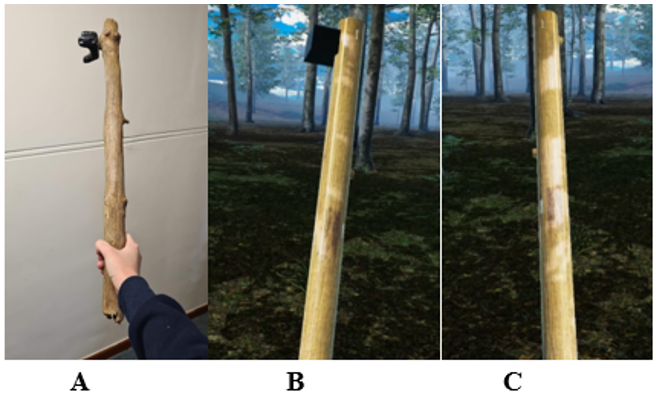

Environment
Soo Kyung Ahn and Lynn WeynSenses
By including interaction and exploration in a multi-sensory environment that allows users to experience the auditory, haptic, olfactory, and optical stimuli, the user will feel more immersed in the virtual environment. Additionally, as it more closely resembles a real nature environment, the benefits of real nature can be better captured.
Smell
Scents will certainly add to the multisensory experience of the environment, and petrichor, undergrowth and forest scents were used to simulate what it would smell like. These scents were designed to match the environment, having relatively sunny weather with cumulus clouds giving the feel of clearing skies after rainfall, and the forest filled with dense undergrowth clustered around trees.
Hearing
Touch
We wanted to incorporate elements of touch, so a given the constraints of what we can do in a 3x3m real room, a bench and a branch were chosen to be present in both the physical room as well as the virtual environment.
The branch can be held, and while the user feels its texture can be used to help move around the environment.
The bench can be sat on when in a particular area of the forest. This allows the user to feel its texture while taking in the forest ambiance, as one would in real nature.
The particulars about implementation details, problems, and solutions are discussed in locomotion
Environmental elements
Beech trees
 Regarding the
composition of the terrain, the forest consists of beech trees which can be found in deciduous
forests, and undergrowth for the forest floor consisting of shrubs, bushes, and herbs, which have
been clustered primarily in the shaded areas of the map. Although beech trees are not endemic to
South Africa, these forest environment nature models were of excellent quality and in terms of
budget the most reasonable choice. There is a tree species, Rapanea melanophloeos, commonly known as
the Cape beech which looks like the European beech tree family, so this does mitigate
the unfamiliarity of the forest that might exist for the average user. Mushrooms grow on some of the
trees adding to the detail, and debris such as rocks, logs, twigs and branches have been placed
throughout the forest to enhance the realism.
Regarding the
composition of the terrain, the forest consists of beech trees which can be found in deciduous
forests, and undergrowth for the forest floor consisting of shrubs, bushes, and herbs, which have
been clustered primarily in the shaded areas of the map. Although beech trees are not endemic to
South Africa, these forest environment nature models were of excellent quality and in terms of
budget the most reasonable choice. There is a tree species, Rapanea melanophloeos, commonly known as
the Cape beech which looks like the European beech tree family, so this does mitigate
the unfamiliarity of the forest that might exist for the average user. Mushrooms grow on some of the
trees adding to the detail, and debris such as rocks, logs, twigs and branches have been placed
throughout the forest to enhance the realism.
River
Based on research supporting blue spaces – stating that they are important to promote mental health - we chose a wide, slow-flowing river. Low flow and low turbidity are preferred in larger rivers, thus slow-flowing, non-murky, reflective water is what we found was most suitable for our environment. We found that more complex environments are more preferred and restorative, which motivates the addition of rocks, branches, and grass around the riverbank.
Waterfall
We chose to add a waterfall, to make the environment more complex and interesting, (also adding to restorativeness) but placed it far away to avoid having harsh water sounds produced from crashing water near to the user, which is known to be unpleasant.
Sky and Clouds
Weather affects the mood of people, and accounts for 40% of its variability. There is evidence that sunny weather lifts the mood of people and is associated with less stress, while rainy weather is associated with depressive symptoms and negative feelings. Thus, it is ideal to create an environment that features sunny weather. A 4K HDRI image-based skybox featuring cumulus clouds and the sun was used for the environment.